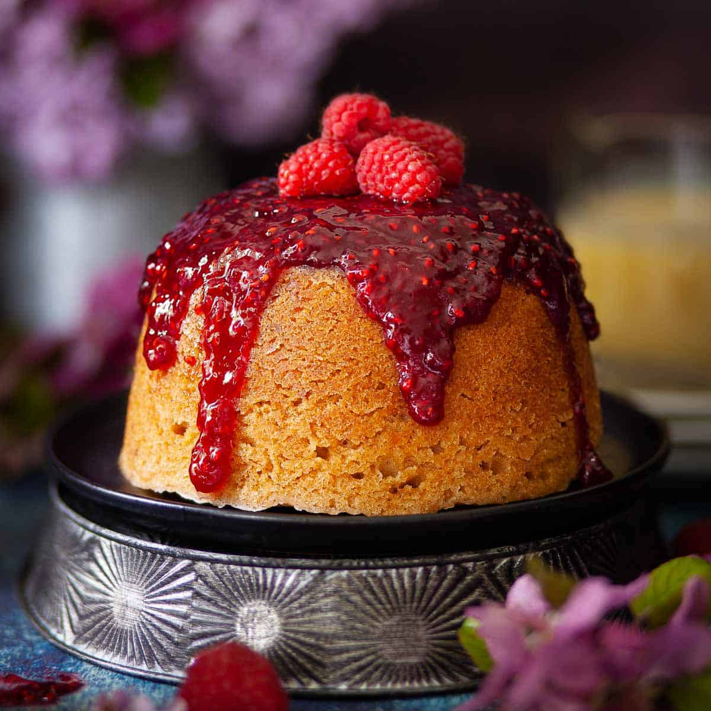

Steamed Pudding
(basic mixture by creaming method)

Description
Easy to make and delicious to eat using just a few ingredients.
This steamed pudding recipe can be adapted to create different variations of it.
Ingredients
- 100g flour
- 1 level tsp. baking powder
- 60g margarine
- 60g sugar
- 1 egg
- a little cold water
- 1/4 tsp. vanilla essence
Steps
- Prepare steamer, grease basin and greaseproof papaer to cover pudding.
- Sieve flour and baking powder together.
- Cream fat and sugar adding essence at this stage.
- Add lightly beaten egg and beat well with 1 tblsp. flour.
- Add cold water alternately with remaining flour to keep mixture to dropping consistency. Fold in carefully.
- Place mixture in basin, cover and steam for approx. 1 1/4 hours.
Variations
For Jam Sponge Pudding put 1 good tblsp. of jam in bottom of pudding basin before putting in basic mixture.
For Chocolate Pudding add 1 level tblsp. cocoa to flour and only use 2 drops vanilla essence.
For Orange or Lemon Pudding omit vanilla essence and add the grated zest of 1 orange or 1 lemon while creaming.
For Sultana Pudding add 30 grams sultanas and 1/2 tsp. lemon zest to basic mixture (omit vanilla essence).
For Coconut Pudding omit vanilla essence and add 2 level tblsp. desiccated coconutwith flour.
For Harlequin Pudding prepare basic pudding mixture and divide roughly into three equal portions. Using food colourings make each portion a different colour, e.g. pink/green/plain, pink/green/brown (using coffee essence), green/yellow/brown. Put mixture into the basin a dessertspoon at a time so that colours will give a marbled effect.